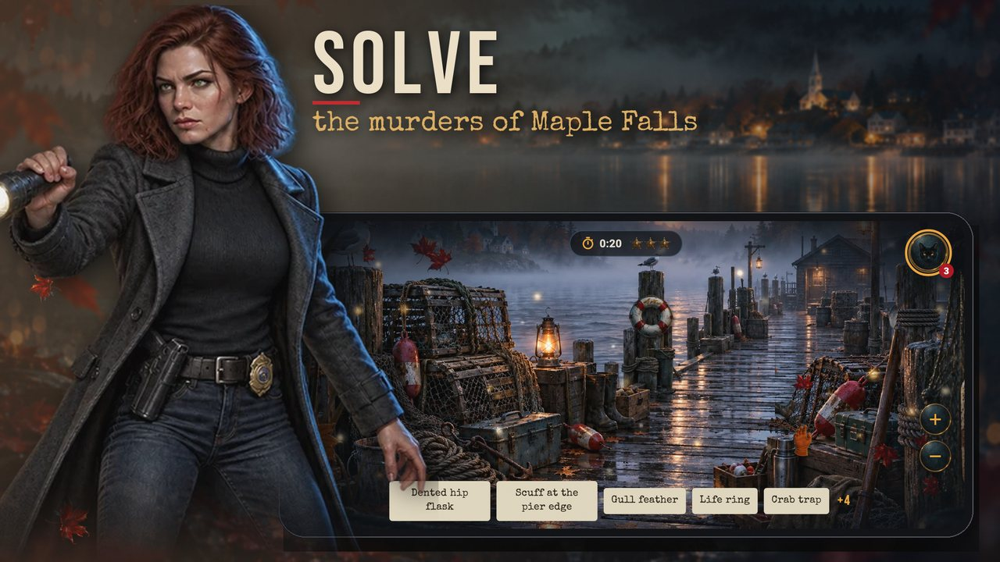
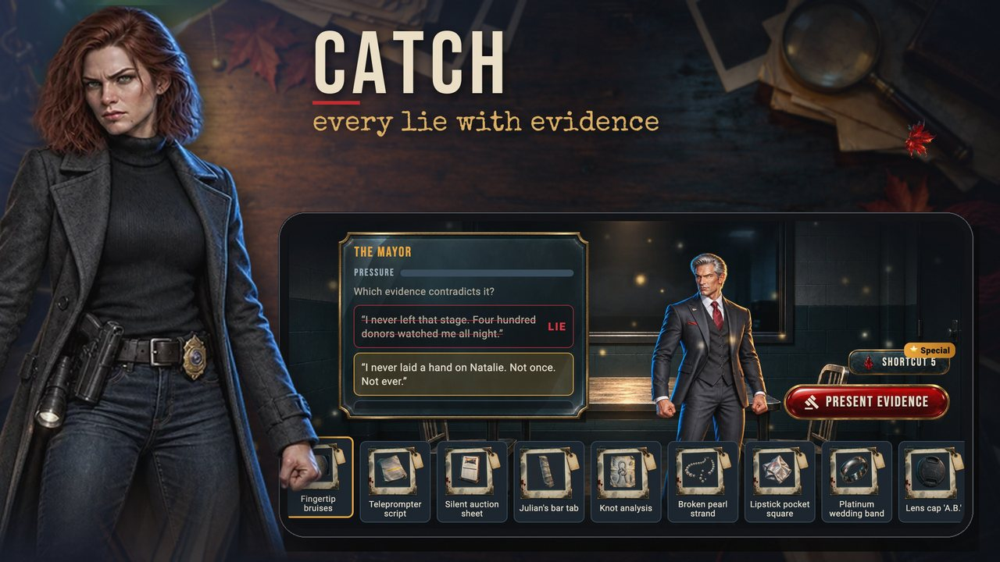
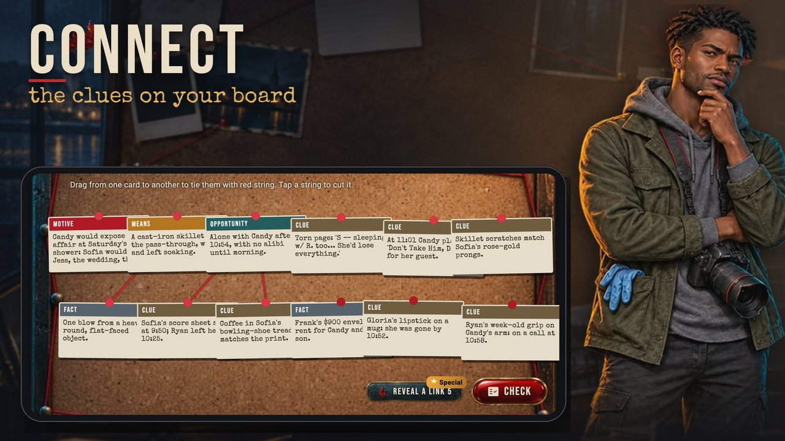
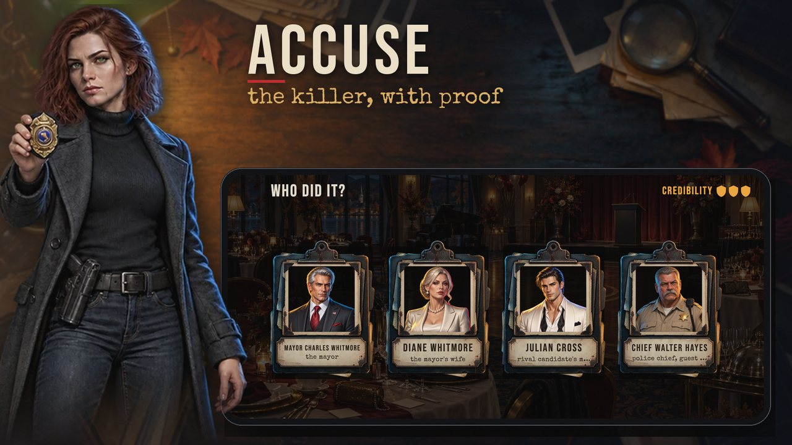

Case file 01 · The Last Toast
Who killed the billionaire?
A cinematic murder mystery for anyone who can never stop at one episode. Search the crime scene, question suspects who lie to your face, work the evidence in the lab, pin it all to your board and accuse the killer, with proof.
Investigate
Painted, living crime scenes full of hidden objects and clues: rain on the glass, a lamp that flickers, fog off the lake.
Interrogate
Everyone in town is hiding something. Present the right evidence at the right moment and catch the lie.
Analyze
Real forensic mini-games: fingerprints, fibers, chemicals, knots, timelines, GPS tracks. No waiting on lab timers.
Accuse
Connect motive, means and opportunity on the deduction board, then name the killer and present three proofs.




Season 1 · The Lamplighter
One town. Twelve murders. One killer behind them all.
Each case is a complete murder with its own suspects. Every crime scene also hides one clue that only Nora notices, and it leads back to the night her sister vanished ten years ago. Your choices about who to trust change the scenes and endings along the way.